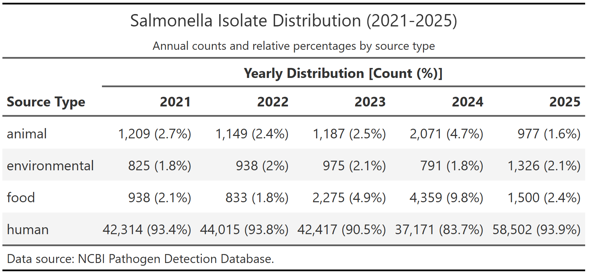
Identifying Key Metadata Predictors of Salmonella AMR Genotypes through Machine Learning
Author
- Marco Reina\(^{1}\)
Author affiliations
- Department of Poultry Science, University of Georgia, Athens, GA, USA.
\(*\) These authors contributed equally to this work.
\(\land\) Corresponding author: marco.reinaantillon@uga.edu
\(\dagger\) The author utilized AI tools, specifically Qween and Gemini, for code troubleshooting; and the use of Copilot to refine the English writing.
Summary/Abstract
In the United States, nontyphoidal Salmonella causes an estimated 1.35 million infections annually, with resistant strains associated with increased hospitalization rates and adverse clinical outcomes. Surveillance systems such as the National Antimicrobial Resistance Monitoring System (NARMS) and NCBI Pathogen Detection generate large-scale genomic and metadata resources that enable data-driven approaches to AMR risk prediction. This project leverages machine learning to predict AMR prevalence in Salmonella isolates using readily available metadata, which included isolation source, serotype, and temporal variables. This approach is helpful because expedites the analysis and offers a first quick screening before obtaining the whole-genome sequencing data. Using a curated dataset of 245,772 isolates from the NCBI Pathogen Detection repository, a binary outcome variable model was engineered, which helps indicating presence or absence of resistance to at least one antimicrobial class. A random forest classifier was implemented via the tidymodels framework, with model performance evaluated through 10-fold cross-validation and a held-out test set. Results indicate strong discriminative ability (ROC AUC = 0.825), high specificity (97.7%), and moderate sensitivity (35.2%), reflecting the inherent class imbalance in surveillance data where non-resistant isolates predominate. Variable importance analyses identified isolation source and top-20 serovars (e.g., I 4,[5],12:i:-, Infantis, Typhimurium) as key predictors of AMR status. These findings support the feasibility of using metadata-driven models for rapid, scalable AMR risk stratification in food safety and public health surveillance contexts.
SUPPLEMENT: Complete iterative process of the project available here
Introduction
Antimicrobial resistance (AMR) is an escalating global public health threat, projected to contribute to 10 million deaths annually by 2050 if current trends continue (O’Neill, 2016; WHO, 2024). Foodborne pathogens, particularly nontyphoidal Salmonella, play a central in harboring and dissimination of resistant genes from agricultural and environmental reservoirs, allowing Salmonella successfully reach human populations (CDC, 2024). In the United States alone, it is estimated that Salmonella causes around 1.35 million illnesses each year, and infections involving resistant strains are associated with longer durations of illness, higher rates of hospitalization, and increased treatment complexity (CDC, 2024; WHO, 2022).
Large-scale surveillance initiatives, like the National Antimicrobial Resistance Monitoring System (NARMS) and the NCBI Pathogen Detection project have generated extensive repositories of bacterial isolate metadata, including source of isolation, serotype, collection date, and geographic origin (CDC, 2026; NCBI, 2026). While whole-genome sequencing offers high-resolution insights into resistance mechanisms, genomic data are not always available in real-time surveillance or resource-limited settings. In contrast, metadata like source and month of collection are routinely collected and immediately accessible. Additionally, serovar could be determine through different faster methods like serovar-specific qPCR screening, allowing this additional variable to be available before obatining the computed serovar preduiction by whole genome sequencing. This raises an important question: Can readily available isolate metadata alone support accurate, scalable prediction of AMR status to inform proactive public health interventions?
The objective of this project is to develop and evaluate a machine learning model that predicts antimicrobial resistance prevalence in Salmonella isolates using only metadata variables, specifically isolation source, top serovars, and temporal indicators, like collection month. By developing a random forest classifier within the tidymodels framework (Kuhn & Wickham, 2020), this work aims to demonstrate the feasibility of metadata-driven risk stratification as a complementary tool for food safety surveillance and early-warning systems.
General Background Information
Antimicrobial resistance in Salmonella most frequently involves five clinically important drug classes: β-lactams (including extended-spectrum cephalosporins), fluoroquinolones, aminoglycosides, tetracyclines, and sulfonamides/trimethoprim. Resistance to β-lactams is primarily mediated by β-lactamase enzymes (e.g., TEM, SHV, CTX-M, and carbapenemases like KPC), with over 1,170 distinct genes identified to date. Fluoroquinolone resistance typically arises from chromosomal mutations in gyrA and parC or plasmid-mediated qnr genes. Aminoglycoside resistance commonly involves enzymatic modification via aminoglycoside-modifying enzymes (e.g., aac, aph, aad genes). Tetracycline resistance is frequently conferred by efflux pumps (tetA, tetB) or ribosomal protection proteins (tetM).
However, Salmonella could be resistant to more than one drug. Multidrug resistance (MDR), which is defined as non-susceptibility to ≥3 antimicrobial classes, is increasingly prevalent in nontyphoidal Salmonella and poses significant treatment challenges. MDR often arises through co-selection mechanisms, where resistance genes cluster on mobile genetic elements (plasmids, integrons, transposons), enabling simultaneous acquisition of resistance to multiple drug classes. Cross-resistance occurs when a single mechanism confers resistance to multiple antimicrobials within or across classes; for example, efflux pumps like AcrAB-TolC can export diverse compounds including fluoroquinolones, β-lactams, and biocides. The emergence of extensively drug-resistant (XDR) strains (resistant to ≥5 classes) has been documented in serovars such as Typhimurium and Infantis, often linked to plasmid acquisition.
Serovar and isolation source are considered among the strongest predictors of AMR status in Salmonella surveillance data. Certain serovars exhibit characteristic resistance profiles: for instance, Typhimurium and 4,[5],12:i:- are frequently associated with the ACSSuT MDR phenotype (ampicillin, chloramphenicol, streptomycin, sulfonamides, tetracycline), while Heidelberg and Infantis increasingly harbor extended-spectrum cephalosporin resistance. Isolation source further refines risk prediction: isolates from poultry and retail meats show higher odds of resistance to tetracyclines and aminoglycosides compared to human clinical isolates, reflecting antimicrobial use patterns in agricultural settings. Metadata capturing serovar and source therefore provide actionable, low-cost proxies for AMR risk stratification in surveillance contexts.
A particular concern has emerged from serovar Infantis, because it has a multidrug-resistant clone of particular concern in poultry production systems has been dissiminated globally. The success of serovar Infantis is largely attributed to the pESI (p_Salmonella_ Infantis) megaplasmid (~280 kb), a conjugative plasmid that carries multiple resistance determinants (e.g., blaCTX-M-65, tetA, sul1, dfrA14), virulence factors (iroN, iss), and heavy-metal resistance genes. Strains harboring pESI exhibit significantly higher resistance to ampicillin, cefazolin, gentamicin, nalidixic acid, trimethoprim-sulfamethoxazole, and tetracycline compared to pESI-negative isolates. Critically, pESI is highly stable and transferable across Salmonella serovars, facilitating rapid dissemination of MDR traits across reservoirs. The global expansion of pESI-positive Infantis underscores the importance of metadata-driven surveillance to detect and track high-risk clones before they cause widespread outbreaks.
Description of Data and Data Source
This project utilizes isolate-level metadata and antimicrobial resistance (AMR) phenotype data from the NCBI Pathogen Detection repository, a centralized platform that integrates genomic sequences, standardized metadata, and AMR annotations from surveillance initiatives including NARMS, GenomeTrakr, and international partners. The complete analytical dataset that it was downloaded, it comprises 688,980 Salmonella enterica isolates collected from human clinical cases, food animals, retail meats, and environmental sources across the United States between 2010–2024.
Key metadata variables include:
- Isolation source (e.g., human, food, animal, or environmental)
- Collection date (year and month)
- Geographic origin (state/country)
- Antimicrobial susceptibility testing (AST) results, interpreted using Clinical and Laboratory Standards Institute (CLSI) breakpoints
AMR status was operationalized as a binary outcome: an isolate was classified as “resistant” if it exhibited non-susceptibility to ≥1 antimicrobial class; otherwise, it was classified as “susceptible.” This definition aligns with public health priorities for early detection of any resistance emergence. Data preprocessing included removal of isolates with missing source or serovar information, deduplication of genetically identical isolates from the same source/date, and harmonization of serovar nomenclature.
Questions/Hypotheses to be addressed
Can readily available metadata variables (isolation source, serovar, and collection month) predict antimicrobial resistance status in Salmonella isolates before obtaining the whole-genome sequencing results?
Methods
Data Preparation and Splitting
To prepare the isolates dataset for a final paper-ready version, the raw data from the NCBI Pathogen Detection database was subjected to a rigorous cleaning and filtration pipeline. Initially, the dataset was reduced by removing non-essential technical metadata, such as sequencing platform details and internal laboratory identifiers, to streamline the analysis. The cohort was then geographically and temporally refined using the countries library to standardize locations to ISO3 codes, specifically filtering for isolates originating in the United States between 2021 and 2025. To ensure the study focused on relevant transmission routes, the data was restricted to four primary source categories: animal, environmental, food, and human. A total of 245,772 isolates were obtained after preprocessing. Following data preparation, the dataset was partitioned into training (75%) and testing (25%) subsets using stratified random sampling to preserve the original class distribution of antimicrobial resistance (AMR) status.
In parallel with the isolates dataset, a secondary dataset was curated from the NIH Bacterial Genomes database (“genomes dataset”) to evaluate structural genomic features and their relationship with AMR. The genomic records were filtered to include only the Salmonella genus and streamlined to retain essential structural variables, including total sequence length, contig count, and the counts of total, protein-coding, and pseudogenes. A total of 33,867 genomes of Salmonella enterica were obtained.These records were then intersected with the NCBI Pathogen Detection database using the BioSample ID as a unique key, with a de-duplication step ensuring only the most recent Annotation Release Date was retained for each isolate. To ensure high-resolution structural integrity for the Descriptive Analysis, the final cohort was restricted to isolates designated as “Complete Genomes.” Although this resulted in a high-quality subset of 214 genomes, the extreme reduction in sample size led to the exclusion of these genomic variables from the final Random Forest models to prioritize broader population generalizability.
Feature Engineering and Preprocessing
The outcome variable amr_prevalence was constructed as a binary factor, where “1” indicated resistance to ≥1 antimicrobial class and “0” indicated full susceptibility. Predictor variables were limited to routinely collected metadata: isolation source (Source.type), the 20 most prevalent serovars (top_20, with all others collapsed into an “Other” category), and collection month (sample_month). Categorical predictors were converted to factor type to enable appropriate encoding within the modeling workflow. No additional scaling or transformation was applied.
Model Specification and Training
A random forest classifier was implemented using the ranger engine within the tidymodels framework. The model specification (rf_spec) was defined in classification mode and combined with the preprocessing formula into a unified workflow() object: amr_prevalence ~ Source.type + top_20 + sample_month. The final model was trained on the complete training dataset, while cross-validated performance was estimated using fit_resamples(). Hyperparameters (e.g., number of trees, mtry, minimum node size) were evaluated at predefined values.
Performance Evaluation
Primary evaluation relied on the receiver operating characteristic area under the curve (ROC AUC), which measures discriminative ability across all probability thresholds and is robust to class imbalance. Secondary metrics included accuracy, sensitivity, specificity, and precision, calculated at the default 0.5 probability cutoff. Predicted class labels and probability scores were extracted via predict() with type = “class” and type = “prob”, respectively. A confusion matrix was generated to visualize true/false positive and negative classifications.
Cross-Validation
To evaluate model generalizability and mitigate overfitting, 10-fold cross-validation was performed on the training set using the vfold_cv function. This procedure partitioned the data into ten distinct, non-overlapping subsets to provide a robust estimate of out-of-sample predictive performance. Beyond cross-validation, an honest assessment was conducted using a held-out test set (comprising 25% of the total data) which remained entirely unseen during the model training to ensure an unbiased evaluation of the final model’s accuracy.
Software and Reproducibility
All data manipulation, modeling, and evaluation were performed in R (v4.4.3) using the tidymodels collection (v1.2.0), including rsample for resampling, workflows for pipeline integration, parsnip for model specification, ranger (v0.16.0) for random forest computation, and yardstick for metric calculation. A fixed random seed (set.seed(1234)) was applied prior to data splitting, fold generation, and model training to ensure complete reproducibility. Analysis code and outputs are version-controlled and publicly accessible via the project repository.
Results
Exploratory Data Analysis
We conducted an exploratory analysis of 245,772 Salmonella isolates to characterize trends in antimicrobial resistance (AMR) and genomic architecture. The most critical exploratory results are summarized below.
SUPPLEMENT: Complete EDA analysis here
Isolate Trends and Source Distribution
The vast majority of isolates in this dataset originate from human clinical cases, representing a significant focus on clinical surveillance. As shown in Table 1, while clinical samples consistently dominate the dataset, there was a notable increase in food-related isolates during 2023 and 2024.
Visualizing Source Dynamics
The temporal distribution of isolates across different sources is visualized in Figure 1. While raw counts are highest in human sources, the data reveals a significant class imbalance across all categories. This distribution underscores a challenge for the predictive model, as the majority of samples are collected through routine clinical surveillance.
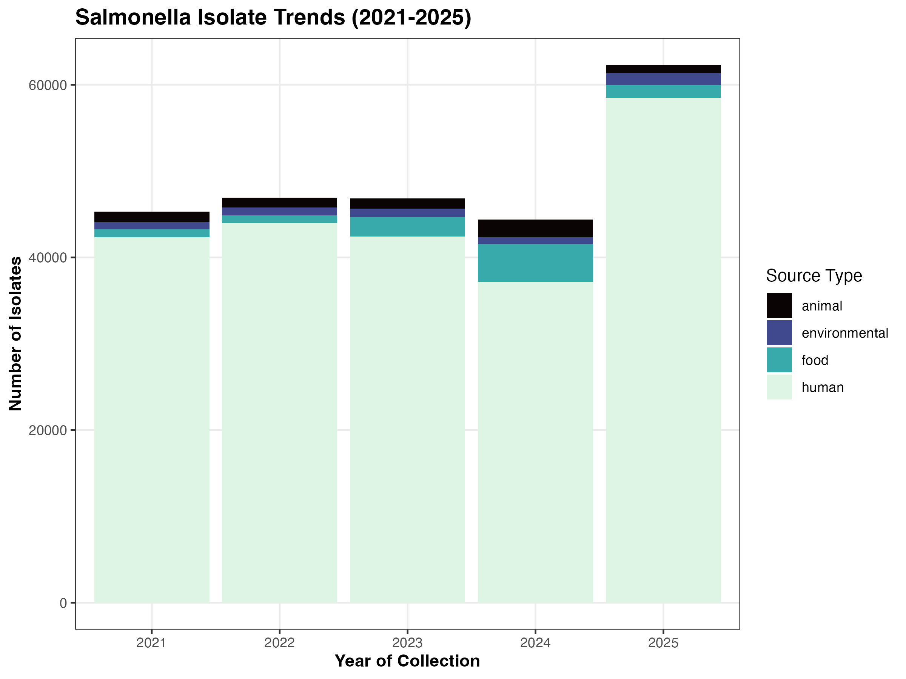
Genomic Structure Analysis
In addition to the primary metadata analysis, a secondary dataset comprising high-quality Salmonella genomes was initially processed to evaluate structural features such as genome length, contig counts, and protein-coding genes. However, this dataset was ultimately excluded from the final predictive modeling phase. The decision to omit these genomic dataset was driven by the significant reduction in sample size that occurred during the intersection of the two databases, which would have compromised the model’s ability to generalize across the broader population. Consequently, this study focused exclusively on the metadata features available from the “isolates dataset” to ensure a robust and scalable assessment of AMR trends.
Our Exploratory Analysis confirmed a strong correlation (\(r \approx 0.90\)) between genome length and protein-coding genes, while pseudogene counts appeared to be independent of these structural metrics.
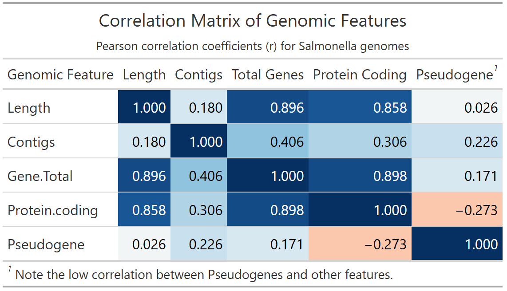
Descriptive analysis
Patterns of AMR Class Prevalence and Co-occurrence
SUPPLEMENT: Complete Descriptive analysis here
A critical step in our descriptive analysis was the characterization of clinically relevant resistance classes. As noted in our Complete Descriptive analysis (supplement), multidrug efflux pumps were excluded from this specific characterization due to their ubiquitous presence (>96% prevalence) across the dataset, which tends to obscure phenotypic resistance trends.
Predominant Resistance Classes
Beyond efflux-mediated mechanisms, Tetracycline, Aminoglycoside, and Sulfonamide resistance emerged as the most prevalent classes (Table 3). These three classes alone account for the majority of the non-intrinsic resistance detected, suggesting a stable reservoir of these genotypes within the Salmonella population.
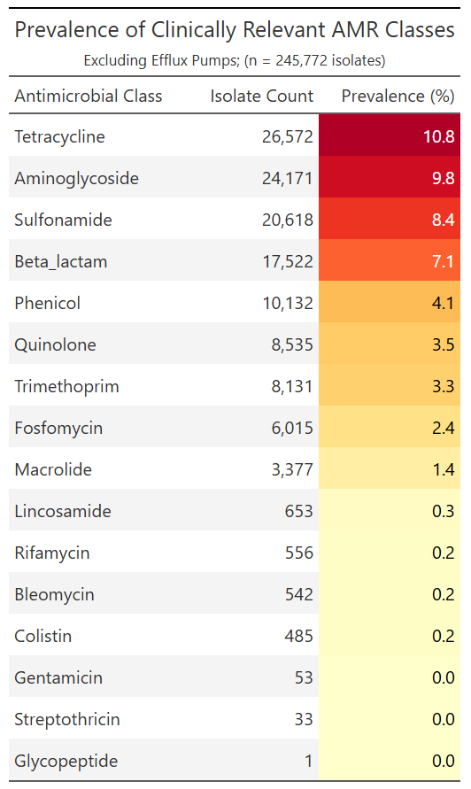
Multidrug Resistance (MDR) by Source
The distribution of multidrug resistance (defined here as resistance to 3 or more classes) showed distinct patterns across isolation sources (Figure 2). While the raw volume of isolates is highest in human clinical samples, a higher proportion of MDR isolates was observed in animal and food-related sources. This suggests that while human surveillance captures more total resistance, the complexity of resistance profiles may be more pronounced in agricultural and production environments.
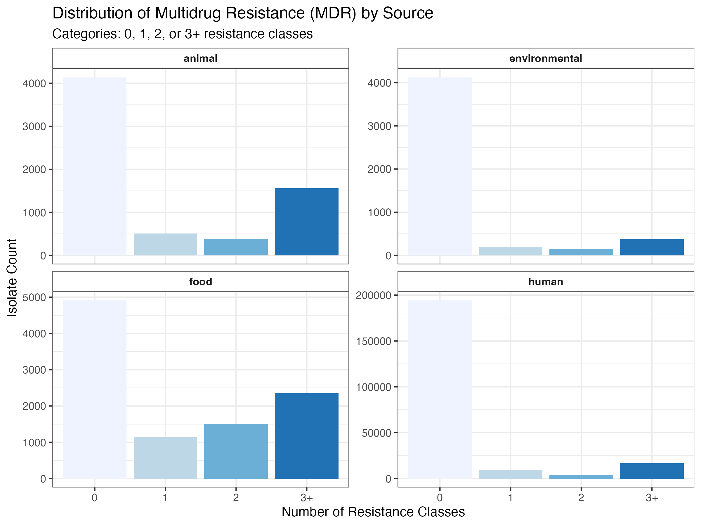
Co-occurrence and Correlation
To understand the underlying structure of these resistance profiles, we calculated the co-occurrence of AMR classes using Pearson correlation (Figure 3). Our results highlight a strong positive correlation between Tetracyclines, Aminoglycosides, and Sulfonamides, likely indicating the presence of linked resistance genes on shared mobile genetic elements (MGEs). Conversely, Quinolone and Fosfomycin resistance showed a negative correlation with most other classes, suggesting that these genotypes may emerge in distinct sub-populations of Salmonella.
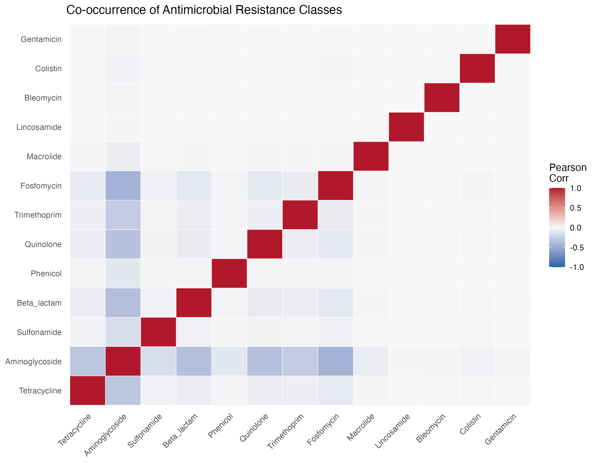
Full analysis
Random Forest to determine AMR
SUPPLEMENT: Complete Random Forest iterations here
The predictive performance of the Random Forest models was evaluated using metadata-only features, including isolation source, top 20 serotypes, and temporal data (month of collection). While individual resistance classes were modeled, the General AMR prevalence model was selected as the primary representative framework for this study. This selection is driven by several key technical and biological considerations. From a public health perspective, predicting overall antimicrobial prevalence offers a more realistic reflection of surveillance goals by accounting for the cumulative resistance burden rather than focusing on isolated, often rare phenotypes. This approach also ensures model stability; for example, specific classes like Phenicol yielded extremely poor sensitivity (0.002) due to severe class imbalance, whereas the general model provides a more robust evaluation of the metadata’s predictive signals. Furthermore, the model exhibits a conservative classification profile characterized by high Specificity (>0.97) paired with lower Sensitivity (0.352), establishing a high threshold for “false alarms” that is advantageous for clinical decision-making. Ultimately, a strong ROC AUC of 0.825 confirms that metadata features (such as isolation source, serotype, and temporal data) contain sufficient diagnostic signal to distinguish between resistant and susceptible isolates even in the absence of genomic sequence data.
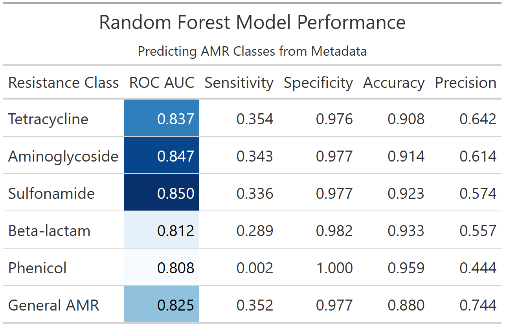
This chart ranks metadata variables based on their contribution to the model’s predictive accuracy. It shows that Serotype is the most influential predictor, followed by Isolation Source, confirming that specific bacterial lineages and their environments are the primary drivers of antimicrobial resistance patterns in this dataset.
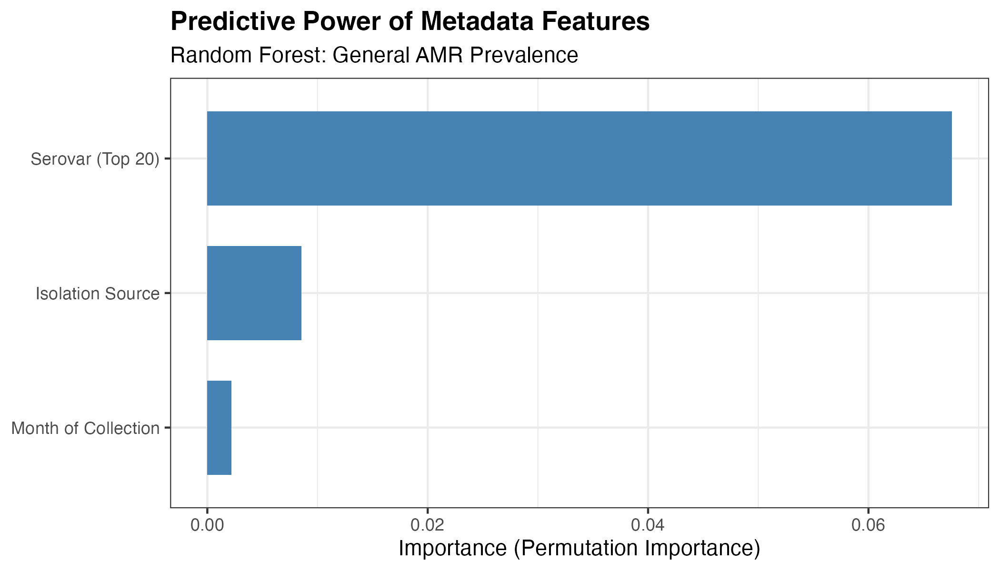
The Receiver Operating Characteristic (ROC) curve illustrates the model’s ability to distinguish between resistant and susceptible isolates across various probability thresholds. With an AUC of 0.825, the curve demonstrates strong discriminative performance, significantly outperforming a random classifier (represented by the diagonal line).
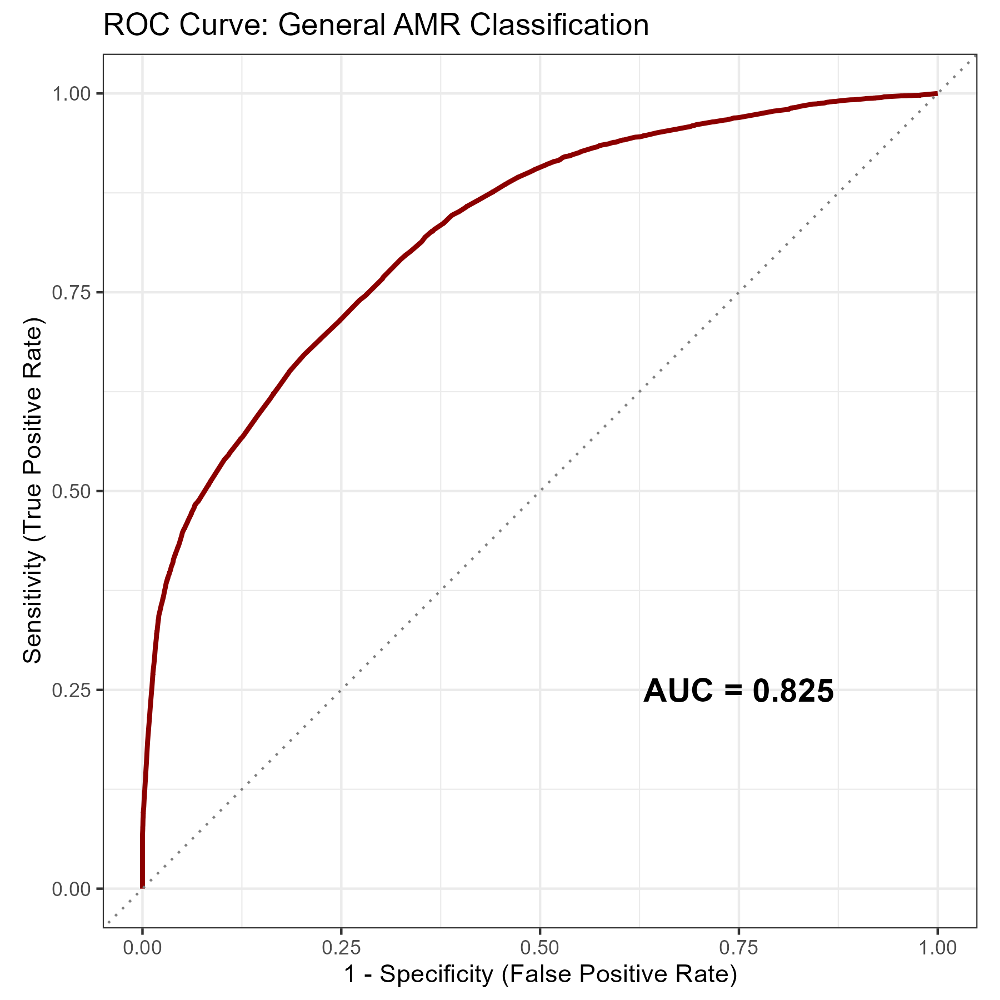
This plot visualizes the distribution of predicted probabilities for both resistant and susceptible classes. The high density of susceptible isolates at very low probability scores explains the model’s exceptional specificity, while the overlapping region near the center highlights the difficulty in achieving high sensitivity using metadata alone.
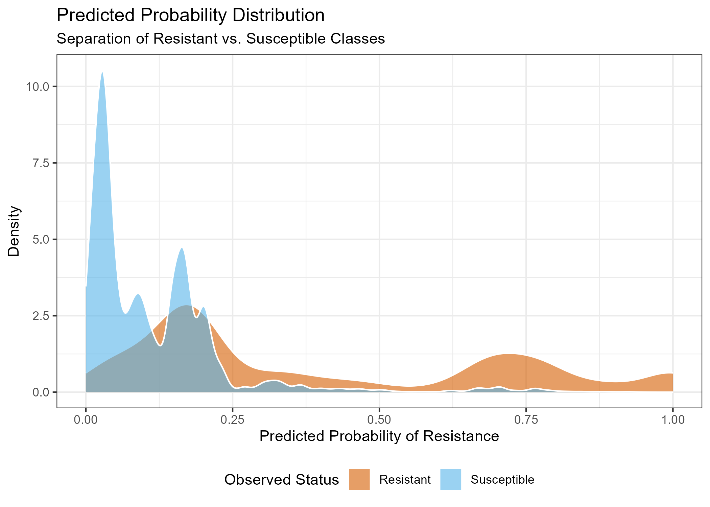
Quality Control
SUPPLEMENT: Complete Quality Control analysis here
The Random Forest model demonstrated high stability, with 10-fold cross-validation yielding a mean ROC AUC of 0.829 (\(\pm 0.001\) SE). During the honest assessment phase, the model maintained this performance on unseen test data, achieving a final ROC AUC of 0.825 and a sensitivity of 0.352 (Table 5). The confusion matrix (Table 6) illustrates the model’s conservative classification strategy; while it correctly identified 50,650 susceptible isolates with minimal false positives (1,166), it successfully captured roughly one-third of the resistant population using metadata alone. This confirms that while the model is conservative, the resistance predictions it does make are highly reliable.
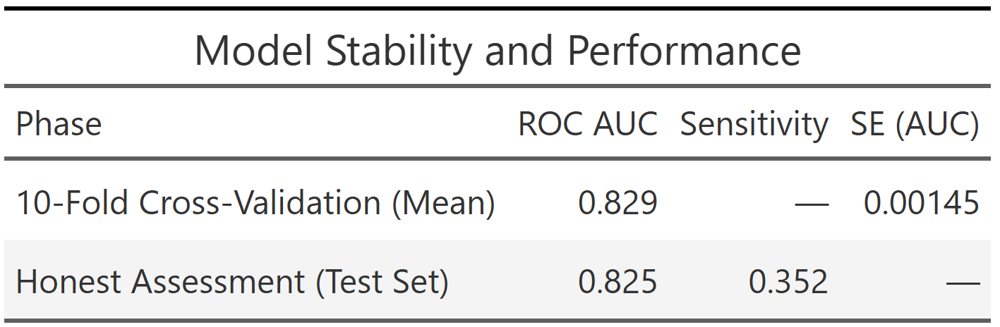
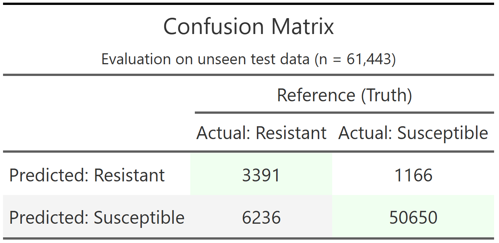
Discussion
Summary and Interpretation
In this study, we developed and evaluated a metadata-driven machine learning framework to predict antimicrobial resistance (AMR) in Salmonella enterica using a large-scale dataset derived from the NCBI Pathogen Detection repository. Specifically, we implemented a random forest classifier using routinely available epidemiological metadata (i.e. isolation source, serovar, and temporal variables) to predict whether an isolate could exhibit resistance to at least one antimicrobial class.
The model demonstrated strong discriminative performance (ROC AUC = 0.825), indicating that metadata alone contains substantial predictive signal for AMR status. However, performance was asymmetrical: the model achieved very high specificity (97.7%) but relatively low sensitivity (35.2%). This reflects the strong class imbalance inherent to surveillance datasets, where susceptible isolates predominate, and suggests that the model is conservative in assigning resistance labels. From a public health standpoint, this behavior implies that while the model may miss a proportion of resistant isolates, the predictions it does make are highly reliable and have low false-positive rates.
Variable importance analyses revealed that serovar and isolation source were the dominant predictors of AMR status. This finding shows that resistance traits are not randomly distributed but instead cluster within specific lineages and ecological niches,and it is consistent with prior epidemiological and genomic studies showing (Zhang et al., 2015). For example, well-characterized serovars such as Typhimurium and Infantis are frequently associated with multidrug resistance due to the presence of mobile genetic elements and lineage-specific adaptations (Feldgarden et al., 2019; McDermott et al., 2016). Similarly, the higher prevalence of resistance observed in food and animal sources aligns with documented antimicrobial usage patterns in agricultural systems and their role as reservoirs for resistant strains (WHO, 2022; Van Boeckel et al., 2015).
Importantly, this study demonstrates that metadata can serve as a scalable and rapid proxy for AMR risk stratification. While whole-genome sequencing remains the gold standard for identifying resistance mechanisms, it is not always available in real-time surveillance contexts (McDermott et al., 2016). Therefore, metadata-driven models such as the one presented here can function as an early-warning, prioritizing isolates for further genomic characterization and informing targeted interventions (Aslam et al., 2018).
Strengths and Limitations
A major strength of this analysis is the scale and diversity of the dataset, encompassing 245,772 Salmonella isolates collected across multiple sources, and time periods. This large sample size enhances statistical power, improves model generalizability, and enables the capture of real-world heterogeneity in AMR patterns. Additionally, the use of standardized, publicly available data from surveillance systems such as National Antimicrobial Resistance Monitoring System (NARMS) supports reproducibility and external validity.
From a methodological perspective, the use of a random forest algorithm is well-suited for this application due to its ability to model nonlinear relationships and interactions between categorical predictors without requiring extensive preprocessing (Wright & Ziegler, 2017). The implementation within the tidymodels framework, combined with 10-fold cross-validation and a held-out test set, further strengthens the robustness and reproducibility of the findings.
However, several limitations should be acknowledged. First, the reliance on metadata alone inherently constrains predictive performance, particularly sensitivity. AMR phenotypes are ultimately driven by specific genetic determinants, and the absence of genomic features limits the model’s ability to detect resistance mechanisms that are not strongly associated with serovar or source (McDermott et al., 2016). This likely explains the moderate sensitivity observed and highlights the trade-off between scalability and biological resolution.
Second, the dataset exhibits substantial class imbalance, with a predominance of susceptible isolates. While ROC AUC is robust to imbalance, threshold-dependent metrics such as sensitivity are adversely affected. Alternative strategies, such as class weighting, resampling techniques, or threshold optimization, could improve detection of resistant isolates in future work.
Third, potential biases in surveillance data may influence the results. For example, overrepresentation of human clinical isolates and underrepresentation of certain environmental or animal sources could skew both descriptive patterns and model learning. Additionally, metadata variables such as “isolation source” may be inconsistently reported or lack granularity, introducing noise into the predictors.
Finally, the binary definition of AMR (resistant vs. susceptible to ≥1 class) simplifies a complex phenotype. While appropriate for public health screening, this approach does not capture the spectrum of resistance, including multidrug resistance (MDR) or clinically critical resistance profiles (Aslam et al., 2018). Future models could incorporate more nuanced outcome definitions to better reflect clinical risk.
Conclusions
This study demonstrates that routinely collected metadata can be effectively leveraged to predict antimicrobial resistance in Salmonella with strong discriminative performance, even in the absence of genomic data. Key predictors such as serovar and isolation source highlight the structured, non-random nature of AMR across ecological and epidemiological contexts. While the model’s high specificity supports its use as a reliable fast screening in surveillance systems, its moderate sensitivity indicates that metadata alone cannot fully capture the complexity of resistance phenotypes. Overall, integrating metadata-driven approaches with genomic data represents a promising path toward more accurate, scalable, and timely AMR risk assessment in food safety and public health.
References
Aslam, B., Wang, W., Arshad, M. I., Khurshid, M., Muzammil, S., Rasool, M. H., Nisar, M. A., Alvi, R. F., Aslam, M. A., Qamar, M. U., Salamat, M. K. F., & Baloch, Z. (2018). Antibiotic resistance: a rundown of a global crisis. Infection and Drug Resistance, 11, 1645–1658. https://doi.org/10.2147/IDR.S173867
Centers for Disease Control and Prevention. (2024). Clinical overview of Salmonellosis. https://www.cdc.gov/salmonella/hcp/clinical-overview/index.html
Centers for Disease Control and Prevention. (2026). Data and reports | NARMS. https://www.cdc.gov/narms/data/index.html
Feldgarden, M., Brover, V., Haft, D. H., Prasad, A. B., Slotta, D. J., Tolstoy, I., Tyson, G. H., Zhao, S., Hsu, C.-H., McDermott, P. F., Tadesse, D. A., Morales, C., Simmons, B., Tillman, G., Wasilenko, J., Folster, J. P., & Klimke, W. (2019). Validating the AMRFinder tool and resistance gene database by using antimicrobial resistance genotype-phenotype correlations in a collection of isolates. Antimicrobial Agents and Chemotherapy, 63(11), e00483-19. https://doi.org/10.1128/AAC.00483-19
Kuhn, M., & Wickham, H. (2020). Tidymodels: A collection of packages for modeling and machine learning using tidyverse principles. https://www.tidymodels.org
McDermott, P. F., Tyson, G. H., Kabera, C., Chen, Y., Li, C., Folster, J. P., Ayers, S. L., Lam, C., Tate, H., & Zhao, S. (2016). Whole-genome sequencing for detecting antimicrobial resistance in nontyphoidal Salmonella. Antimicrobial Agents and Chemotherapy, 60(9), 5515–5520. https://doi.org/10.1128/AAC.01030-16
National Center for Biotechnology Information. (2026). Pathogen Detection. Retrieved April 27, 2026, from https://www.ncbi.nlm.nih.gov/pathogens/
O’Neill, J. (2016). Tackling drug-resistant infections globally: Final report and recommendations. Review on Antimicrobial Resistance. https://amr-review.org
R Core Team. (2024). R: A language and environment for statistical computing (Version 4.4.x) [Computer software]. R Foundation for Statistical Computing. https://www.r-project.org
Van Boeckel, T. P., Brower, C., Gilbert, M., Grenfell, B. T., Levin, S. A., Robinson, T. P., Teillant, A., & Laxminarayan, R. (2015). Global trends in antimicrobial use in food animals. Proceedings of the National Academy of Sciences, 112(18), 5649–5654. https://doi.org/10.1073/pnas.1503141112
World Health Organization. (2022). Global antimicrobial resistance and use surveillance system (GLASS) report: 2022. https://www.who.int/publications/i/item/9789240062702
World Health Organization. (2024). Antimicrobial resistance. https://www.who.int/news-room/fact-sheets/detail/antimicrobial-resistance
Wright, M. N., & Ziegler, A. (2017). ranger: A fast implementation of random forests for high dimensional data in C++ and R. Journal of Statistical Software, 77(1), 1–17. https://doi.org/10.18637/jss.v077.i01
Zhang, S., Yin, Y., Jones, M. B., Zhang, Z., Deatherage Kaiser, B. L., Dinsmore, B. A., Fitzgerald, C., Fields, P. I., Deng, X., & Salmonella Working Group. (2015). Salmonella serotype determination utilizing high-throughput genome sequencing data. Journal of Clinical Microbiology, 53(5), 1685–1692. https://doi.org/10.1128/JCM.00323-15